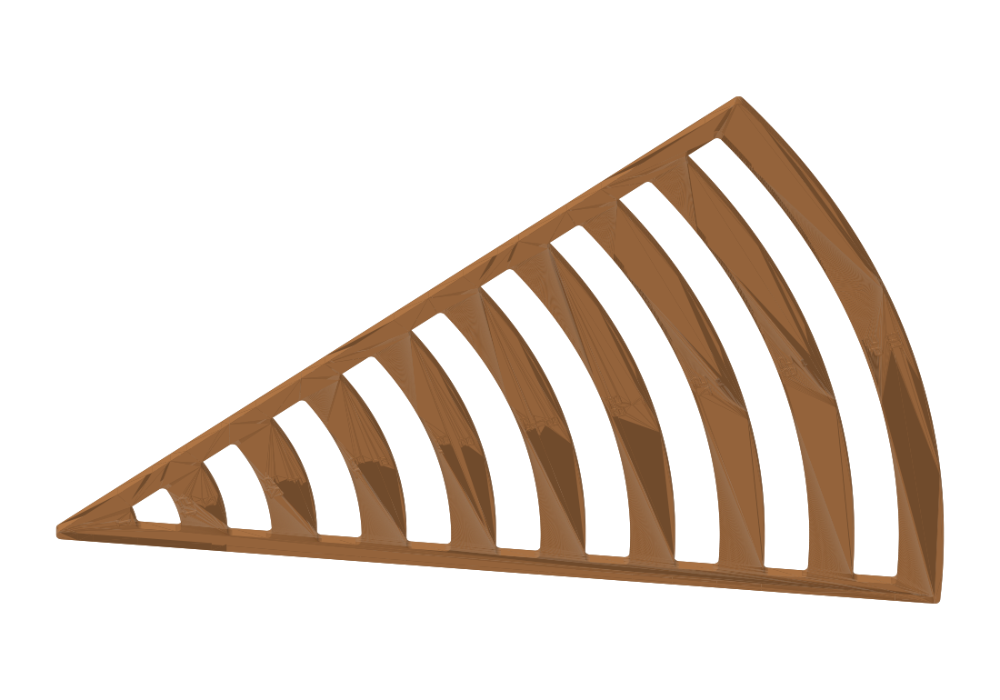

Eighth-circle stencil

About this print
A drawing stencil for laying out curved furniture parts on paper. Set the rounded corner at the center of your circle, then trace the edge beside the radius you want. The labeled edges cover 1 to 10 inches in half-inch steps.